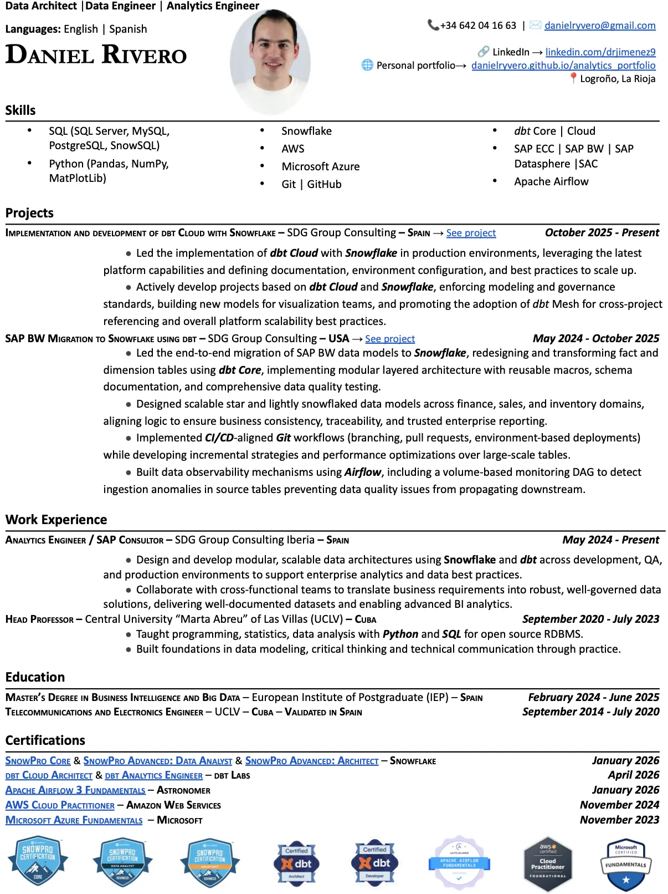

Daniel Eduardo
Rivero Jimenez
Resume
Download in Spanish Download in English
This is my personal project, and a way for showcasing my skills in
SQL, Snowflake, dbt, Tableau, Power BI, Git, GitHub, SAP ECC & BW and Python language.
All files used for these projects are stored in this dedicated GitHub Repository.
Telecommunications and Electronics Engineer since 2020.
Currently working as an Analytics Engineer for SDG group in Spain,
where I have mastered Snowflake, dbt, Airflow and SAP ECC.
Master's Degree in Business Intelligence and Big Data from the
European Post-Graduate Institute (IEP) in June, 2025.
Snowflake Certified with SnowPro Advanced: Architect,
SnowPro Advanced: Data Analyst & SnowPro Core.
Microsoft Certified in Azure Fundamentals.
AWS Certified Cloud Practitioner.
Certified dbt Cloud Architect.
Developed while following the dbt Developer Path, using dbt Cloud
interface and Snowflake as the Database manager and cloud resource provider.
Version control, testing, documentation, macros, incremental models,
jobs refactoring and use of packages are some of the things reflected here.
Go to the repo for more information, code and configuration files.
My version of the app built in the Hands-On Essentials: Data Application Builders Workshop, with the purpose of using Snowflake as a back end, Streamlit as front end and Fruityvice API to get information about the fruits. This includes: Streamlit (Python), SnowSQL, REST APIs and CLIs among others.
Built a real-time data ingestion pipeline between AWS S3 and Snowflake
using Snowpipe and SQS. Designed an automated flow to load CSV and JSON
files from S3 into Snowflake tables with minimal latency, leveraging
storage integration and IAM roles for secure cross-platform connectivity.
My implementation of SAP inventory Goods Movement logic, specifically for the
extractors 2LIS_03_BF (Goods Movements) and 2LIS_03_BX (Inventory Initialization).
It includes the raw extractor code in SQL, adapted for dbt and Snowflake, and also the
profiling files, dbt models for staging, transformed, conformed layers, macros, and
the data mart that consolidates all logic for reporting purposes.
ABAP code that facilitates the documentation of the main objects
in a Business Warhouse (SAP BW) environment, useful for the discovery
phase of a migration project or to know what the warehouse looks
like with a glance. Create and run the program in the SE38 transaction
and collect the output files in the AL11 after just a couple of settings
in the code, as indicated in the instructions.
An overview of a COVID-19 disease dataset about
satistics of vaccinations and deaths using SQL best
practices to import it into a DataBase and clean it with
the help of pgAdmin 4 open source tool and PostgreSQL.
Relational Database Management System.
This project applied core data science tools to predict customer purchasing behavior. I used Python, Pandas for data manipulation, Scikit-learn for model building and evaluation, and Jupyter Notebook as the development environment.

This project is about managing a Nashville Housing dataset obtained from Kaggle using SQL in order to get meaningful insight out of it. Data is Trasformed and optimised for further Analysis.
A powerful and interactive Dashboard built using Tableau Public Visualization tool to showcase the house Sales in King County, Washington from May, 2014 to May, 2015.
Datasets from Kaggle that are used to visualize and interpret the AirBnB house prices by region and time of the year 2016 in Seattle, Washington. Excel is used to transform the datasets into one to load to Tableau Public.
Cleaning a Dataset using Pyhton language and Pandas library in Jupiter Notebook, using best practices and following guidelines to get a clean dataset as the output. This Absenteeism Excercise will be the way to showcase data wrangling.
Obtaining data using iTunes API and scraping methods using Pandas in Python is a reliable way of gettting a meaningful dataset.
Getting constant information about a page using Beautiful Soup library in Python. Saving your own data to a file for further analysis is the basis for having really good data to analyze.
A Power BI report using data extracted from the European Data webpage. Data from a JSON file is imported into Power Query and cleaned using the advantages of this tool inside the Power BI Desktop app, which is used to visualize this interactive Dashboard.
A Sales Report in Power BI using data extracted from the Adventure Works Database, by Microsoft. Data imported from csv and Excel files into Power Query and then visualized using the Power BI Desktop app. The result is a powerful Dashboard.
Resume
Download in Spanish Download in English

As an SAP Consultant and Analytics Engineer at SDG Group, I work at the intersection of business and data engineering, helping enterprises modernize their data platforms. My role involves migrating legacy systems such as SAP ECC and SAP BW to cloud-based architectures like Snowflake, leveraging tools like dbt for transformation and SAP Datasphere for integration. Through hands-on experience and continued learning—including Certifications and a Master's in Business Intelligence and Big Data—I’ve developed a deep understanding of the data analytics lifecycle, combining strong technical execution with a business-driven mindset.